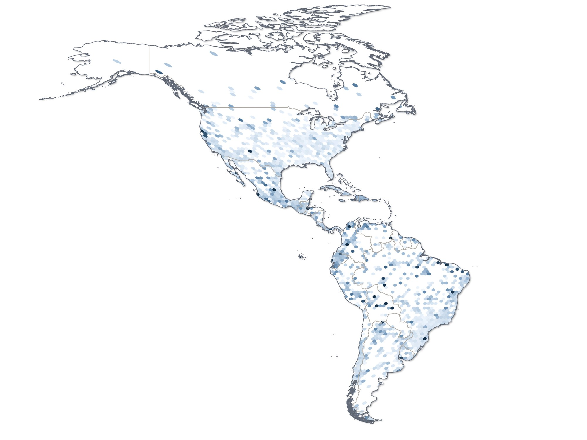
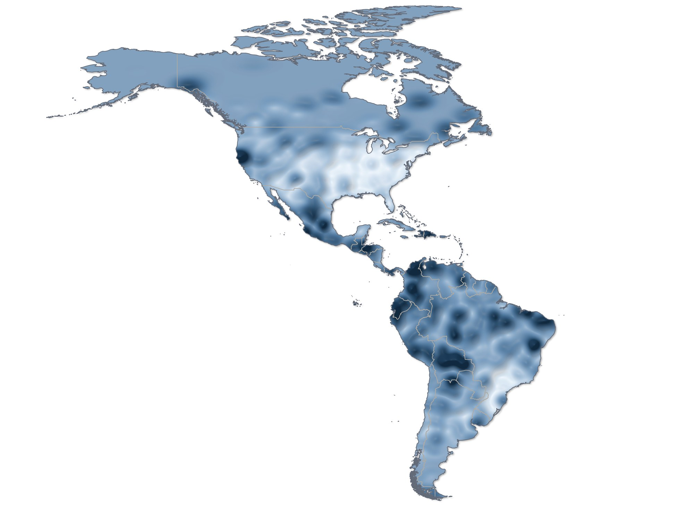
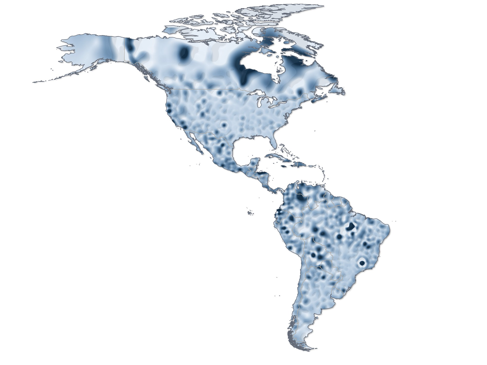
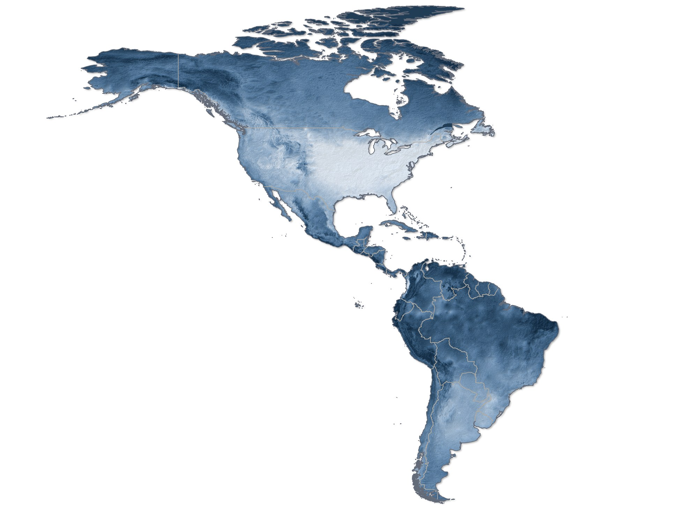
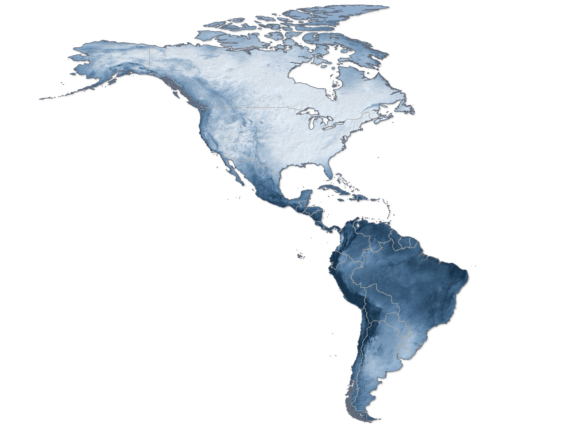
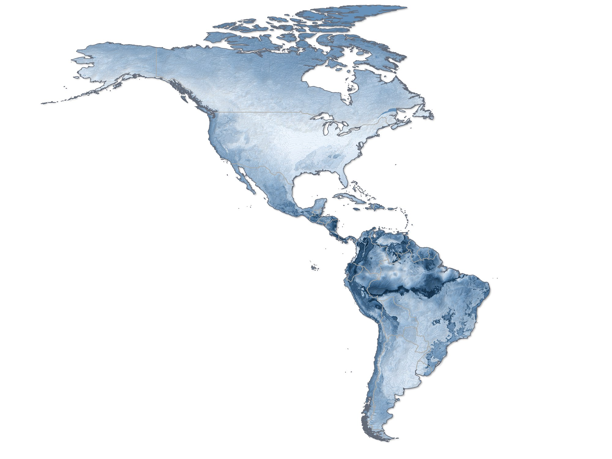
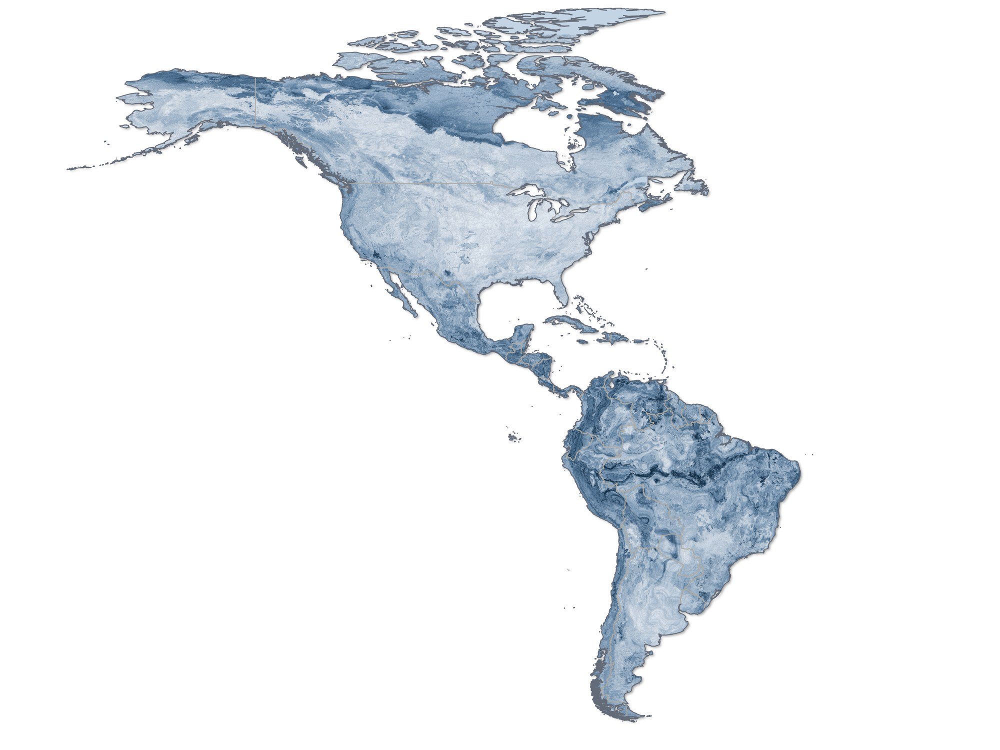
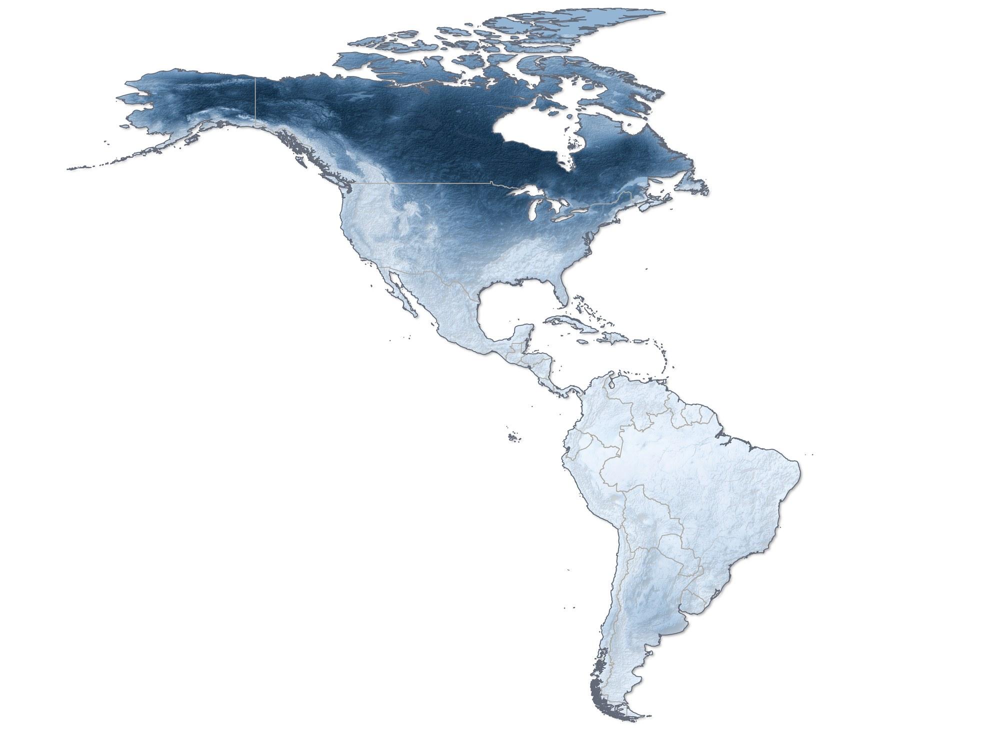

Endemicidade de aranhas: onde se concentram as espécies de distribuição restrita
Endemismo ponderado observado, interpolado por krigagem e por spline, e previsto por cinco algoritmos: cada espécie pesa o inverso da sua área de distribuição.
- Entrega
- Tese de doutorado, PPG Zoologia, UFMG (cap. 3)
- Orientação
- Adalberto J. dos Santos
- Meu papel
- Autor: banco de dados, análises e mapas
- Ferramentas
- QGIS · BioDinamica (Dinamica EGO) · ArcGIS Pro · R








Endemicidade observada por hexágono de 1°, calculada direto dos registros. É o dado de partida, antes de qualquer interpolação.
Endemicidade observada interpolada por krigagem a partir dos hexágonos: uma superfície contínua que leva em conta a autocorrelação espacial.
Endemicidade observada interpolada por spline, um interpolador determinístico que gera uma superfície mais suave que a krigagem.
Endemicidade prevista por modelo aditivo generalizado (GAM), a partir dos componentes principais do ambiente.
Endemicidade prevista por modelo linear generalizado (GLM), a partir dos componentes principais do ambiente.
Endemicidade prevista por regressão multivariada por splines adaptativos (MARS), a partir dos componentes principais do ambiente.
Endemicidade prevista por Random Forest, a partir dos componentes principais do ambiente.
Endemicidade prevista por máquina de vetores de suporte (SVM), a partir dos componentes principais do ambiente.
As três formas de mapear a endemicidade observada, lado a lado.
A endemicidade observada (krigagem) e as cinco previsões, para comparar onde os algoritmos concordam.
O problema
A riqueza não mostra onde estão as espécies exclusivas de uma região. O endemismo ponderado dá mais peso às espécies de distribuição restrita, as que mais pesam em decisões de conservação.
Os dados
Os mesmos registros e preditores ambientais das pranchas 1 e 2, em hexágonos de 1°.
O método
- Endemismo ponderado no BioDinamica: cada espécie recebe um valor inverso à sua área de distribuição, e cada hexágono recebe a média corrigida.
- Interpolação por krigagem e por spline.
- Previsão por cinco algoritmos (GAM, GLM, MARS, Random Forest e SVM) com os componentes principais do ambiente.
- Correlação com os mapas de viés, com a riqueza e com as variáveis ambientais.
O resultado
A endemicidade depende pouco do esforço de coleta e da riqueza: é outro retrato da diversidade.
- Há áreas de endemicidade alta em praticamente todos os países do continente.
- A correlação com a densidade de registros é baixa (r = 0,3), e com a riqueza, menor ainda (r = 0,2).
Publicação
- Russo P. (2024). Spider biogeography of the Americas: from literature data to diversity patterns. Tese de doutorado, Programa de Pós-Graduação em Zoologia, UFMG.